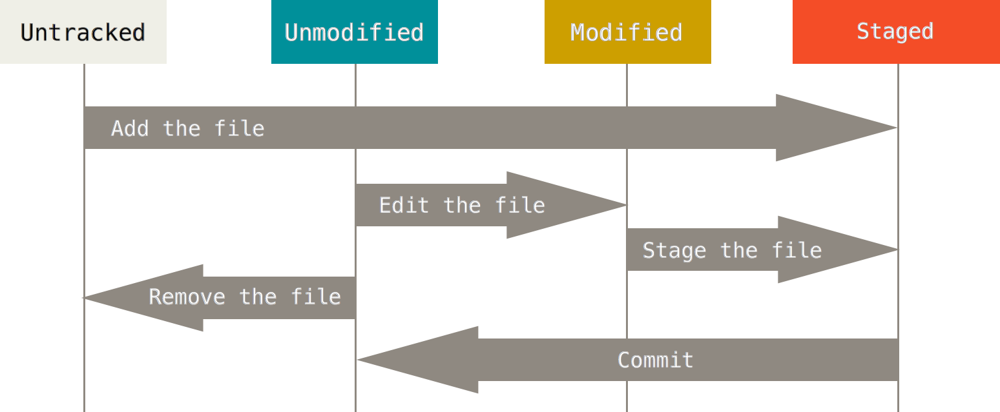
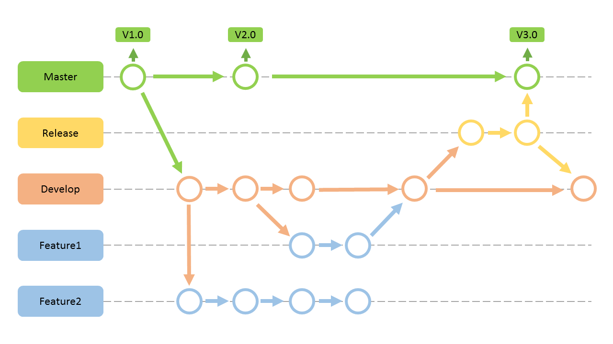
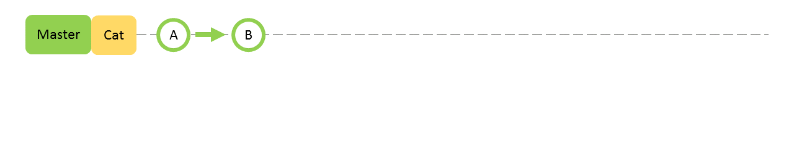
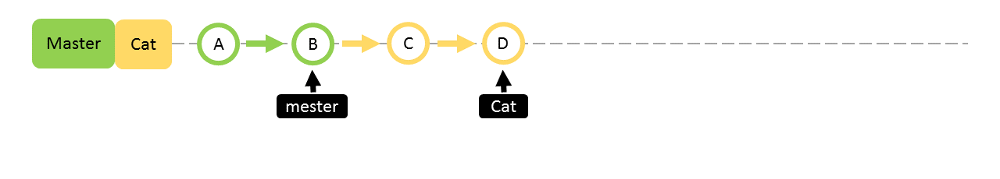

Git Guide
For NTUCSIEB05
Created by B04莊翔旭 / @Harakuro
什麼是 Git？
"Git is a free and open source distributed version control system designed to handle everything from small to large projects with speed and efficiency."
By Linus Torvalds
- 免費且開源 Free and Open source
- 發散式版本控制系統 DVCS
- 創造者：Linus Torvalds (Linux creator)
- 目的：管理Linux Kernel 原始碼
那誰再用 Git 管理？

為什麼我們需要？
我們來一點想像......
當我們修改程式到一個段落
要存檔時......
1.直接存檔，不備份
這 code 不行，但要改回去好麻煩......GG
改爛了！是改到哪裡開始出錯的......GG
那就來點 Re. 吧
ゼロから始める異世界生活？
2.修改前暫時備份一份
突然需要改回好久以前的版本......GG
3.那有改變就備份一份！
- 看起來很棒
- 但如何命名？日期時間？
- WTF！那天我改了什麼？
- 硬碟空間不夠用！
更不用說....
未來還要多人協作一份Project
- 命名還需要加上編輯者？
- WTF！那天誰又改了什麼？
- 檔案伺服器空間不夠用！
為了解決以上問題
版本控制系統 VCS 就出現了
版本控制系統
Version Control System
本地端版本控制系統
Local VCS (第一代)
- 無法協同開發
集中式版本控制系統
Centralized VCS (Lock型，悲觀鎖定) (第二代)

- 可以避免衝突
- 其他人得排隊，越多人效率越差
- 先取出的人寫很久或忘記 unlock....
集中式版本控制系統
Centralized VCS (Merge型，樂觀鎖定) (第二代)

- 做什麼事都要跟、伺服器連線
- 單點故障 Single point of failure
分散式版本控制系統
Distributed VCS (Git)

終於要來談談 Git 了
- 便宜快速 ( open souese and free )
- 省空間 ( DAG儲存系統 )
- 內容保存在本地端，可不須網路
我知道Git是什麼了
但是要怎麼用？
查詢 Git 指令
$ git help
usage: git [--version] [--help] [-C ] [-c name=value]
[--exec-path[=]] [--html-path] [--man-path] [--info-path]
[-p | --paginate | --no-pager] [--no-replace-objects] [--bare]
[--git-dir=] [--work-tree=] [--namespace=]
[]
These are common Git commands used in various situations:
start a working area (see also: git help tutorial)
clone Clone a repository into a new directory
init Create an empty Git repository or reinitialize an existing one
work on the current change (see also: git help everyday)
add Add file contents to the index
mv Move or rename a file, a directory, or a symlink
...
設定自己的 Git！-config
## 查 confing 怎麼用，要離開指令說明的話要按下":q" ##
$ git help confing
## 設定使用者名稱，用來記錄誰更改檔案，--global 表示是全域的設定 ##
$ git config --global user.name "User_name"
## 我們可以開啟 colorui 讓 git 輸出的文字加上顏色 ##
$ git config --global color.ui true
## 查看目前的 git config 設定 ##
$ git config --list
開始使用 Git！
首先先建立一個 Git 的 Repository
可以把 Repository 想做是一個資料庫的意思
建立一個 Git 的 Repository 有兩種方法：
init & clone
開始使用 Git！- init
## 先建立資料夾 ##
$ mkdir file
## 移動到剛剛創好的資料夾 ##
$ cd file
## 建立 Git repo ##
$ git init
Initialized empty Git repository in /path/file/.git
## 會把當前資料夾設定成一個 repo ##
開始使用 Git！- clone
## 複製 Git repo ##
$ git clone https://path/repo_name.git file
## 會在當前資料夾中建立一個 file 的資料夾，把 git 下來的資料放進去 ##
Git的基本功
status, add, commit, log
Git的基本功 - status
$ git status
# On branch master
#
# Initial commit
#
nothing to commit (create/copy files and use "git add" to track)
現在在資料夾裡新增一個 test.c 檔案後...
$ vim test.c
# #include <學術部很棒.h>
#
# void main(void){
# ...
# }
:q
Git的基本功 - status
$ git status
# On branch master
#
# Initial commit
#
# Untracked files:
# (use "git add ..." to include in what will be committed)
#
# test.c
nothing added to commit but untracked files present (use "git add" to track)
會看到剛剛新增的 test.c 檔案變成 Untracked files
Git的基本功 - add
$ git add test.c
$ git status
# On branch master
#
# Initial commit
#
# Changes to be committed:
# (use "git rm --cached ..." to unstage)
#
# new file: test.c
#
test.c 的狀態 Untracked files → Changes to commit (stage)
如果新增錯檔案了怎麼辦？這個指令可以拯救你！
$ git rm --cached fileGit的基本功 - add
## tip: git add 各種用法 ##
## 將列出的 file 新增到 stage ##
$ git add file1 file2 file3 ...
## 將整份 repo 裡全部有改變的檔案新增到 stage ##
$ git add --all
新增到 stage
## 將目前資料夾裡全部有更改的 txt files 新增到 stage ##
$ git add *.txt
## 將 docs 資料夾裡全部有更改的 txt files 新增到 stage ##
$ git add docs/*.txt
## 將 docs 資料夾裡全部有更改的檔案新增到 stage ##
$ git add docs/
## 將整份 repo 裡全部有更改的 txt files 新增到 stage ##
$ git add "*.txt"
Git的基本功 - commit
將檔案新增到 stage 之後...就要 commit！
$ git commit輸入完會跳出純文字編輯器，會讓你輸入這次更動改了什麼
Add test.c file to test git function
#
# Please enter the commit message for your changes. Lines starting
# with '#' will be ignored, and an empty message aborts the commit.
# On branch master
#
# Initial commit
#
# Changes to be committed:
# (use "git rm --cached …" to unstage)
#
# new file: test.c
#
Git的基本功 - commit
成功之後就會出現以下訊息
[master 5f76371] Add test.c file to test git function
1 files changed, 8 insertions(+), 0 deletions(-)
create mode 100644 test.c加號(+)代表增加的部份，減號(–)代表刪除的部份
每次 commit 都要進編輯器打訊息好麻煩，那就加上 -m
$ git commit -m "Add test.c to test git function"Git的基本功 - log
$ git log
5f76371 - (HEAD, master) Add test.c file to test git function (3 minutes ago)
4ca268d - (origin/master) First commit (33 minutes ago)
亂碼是當次 commit 的版號，後面的是 commit 的訊息、時間
使用 --stat 參數可以看到更詳盡的訊息
$ git log --stat
5f76371 - (HEAD, master) Add test.c file to test git function (7 minutes ago)
.gitignore | 3 +++
test.c | 5 +++++
2 files changed, 8 insertions(+), 0 deletions(-)
4ca268d - (origin/master) First commit (37 minutes ago)
lib/animal.c | 5 +++++
spec/animal_spec.c | 5 +++++
2 files changed, 10 insertions(+), 0 deletions(-)
還想要更多更詳細的訊息，就加上 -p
Git 基本功重點整理！
Git 就只有這樣嗎？
當然不只，還有 branch！
Branch 哲學
新增支線任務 branch
列出所有的 branch 並提示目前正在哪個 branch
$ git branch
* master
確認完有哪些 branch 後，就要來新增拉
$ git branch cat
$ git branch
cat
* master
## 注意: 新增完後所在的 branch 還是 master ##
## tip: 如果想刪除 branch 可以加上參數 "-d" ex: $ git branch -d cat ##
新增支線 branch
這時候的 branch GUI 長這樣
那...要怎麼切換呢？ 還是在 Master 上不是嗎？
偶而，也想換個 branch
$ git checkout cat
Switched to branch 'cat'
## 檢查一下所在 branch ##
$ git branch
* cat
master
現在你可以對 cat 這個 branch 做些壞壞的事情拉
對著 cat 做些什麼吧！
接下來在 cat branch 上做點事情
新增一個檔案，加上內容，將它 add 到 stage 後再 commit
$ vim myPet/cat.c
$ git status
# On branch cat
# Untracked files:
# (use "git add ..." to include in what will be committed)
#
# myPet/cat.c
nothing added to commit but untracked files present (use "git add" to track)
$ git add myPet/cat.c
$ git commit -m "Add Cat.c"
[cat ea7d309] Add Cat.c
1 files changed, 3 insertions(+), 0 deletions(-)
create mode 100644 myPet/cat.c
這樣資料夾不是很亂嗎？？
咱們切回去就知道了！
$ ls
test.c myPet/
$ git checkout master
Switched to branch 'master'
Your branch is ahead of 'origin/master' by 1 commit.
$ ls
test.c
剛剛新增的 myPet/cat.c 消失了！
Git 在切換 branch 的同時會把目錄更動成那個 branch 的狀態
再次支線 branch
好！我們切回去 cat branch 在做些事情然後 commit
再切回去 master 查看 branch 狀態
$ git checkout master
Switched to branch 'master'
Your branch is ahead of 'origin/master' by 2 commit.
這時候的 branch GUI 長這樣
對著 Master 做點.....
這時候在 master 上繼續開發會發生什麼事呢？
$ vi test.c
$ git add test.c
$ git commit -m "fix test.c"
[master 7d72927] fix test.c
1 files changed, 2 insertions(+), 0 deletions(-)
咦?! branch GUI 的樣子 ...... 分岔了！
假設現在 cat branch 的開發完畢！
通常我們要做的事情會是
將 cat branch 合併回 master branch
branch合併 - merge
將兩支 branch 的 head 比對後再把內容合併起來
$ git merge cat
Merge made by recursive.
myPet/cat.c | 3 +++
1 files changed, 3 insertions(+), 0 deletions(-)
create mode 100644 myPet/cat.c
merge 後的 branch GUI 長這樣~

branch合併 - rebase
將某一支 branch 基於另一支 branch 的內容合併起來
## 切換到 cat branch 之後再下 rebase 指令 ##
$ git checkout cat
Switched to branch 'cat'
$ git rebase master
First, rewinding head to replay your work on top of it...
Applying: Add cat.c
Applying: Add initializer
branch GUI 之 rebase 的過程 ~
merge vs rebase
rebase 為整理本地端的 branch 使用
要同步(push)的 branch 別使用 rebase
會出現非常多的問題，例如 commit 訊息消失了
多人協做 code 時會造成別人同步(push)不了...
其實...還有很多種合併方式
像是指定 commit 的合併
但今天只講 merge and rebase
迪夫 diff
用來檢查 commit 或 branch 之間的不同的地方
$ git diff cat master
diff --git a/myPet/cat.c b/myPet/cat.c
deleted file mode 100644
index 1227d26..0000000
--- a/myPet/cat.c
+++ /dev/null
@@ -1,5 +0,0 @@
-class Cat < Animal
- def initialize
- super
- end
-end
處理 Git 合併時的衝突
常發生正在 merge 或 rebase 的過程中產生 convict (衝突)
例如：假設我們在 cat 和 master 上都對 cat.c 做編輯
$ git merge cat
Auto-merging myPet/cat.c
CONFLICT (content): Merge conflict in myPet/cat.c
Automatic merge failed; fix conflicts and then commit the result.
這時候我們打開 cat.c 這支檔案會看到：
233 ## 僅擷取需要注意的地方，有時候會需要在上千行 code 裡找 ##
234 <<<<<<<<<< HEAD
235 printf("It's a cat init.");
236 ==========
237 printf("It's a cat.");
238 >>>>>>>>>> cat
做出決定看是要都留下，或是選一個，或是改成想要的內容
修改完畢後存檔，將修改過的檔案再使用 git add
將衝突都修正完畢後就使用 git commit 在提交一次
發生 confict 時的處理步驟
- 將發生 confict 的檔案打開處理內容
(別忘了刪除 <<<、===、>>> ) - 使用 git add 將處理好的檔案加入 stage
- 反覆步驟 1~2 直到所有 confict 處理完畢
- git commit 提交合併訊息
- 完成！
檔案回復！！
版本控制最大的好處之一就是讓你永遠可以後悔
取消上一次的 commit - reset
$ git reset --soft ORIG_HEAD
HEAD is now at c126ff9 Config initialze
取消已暫存(stage)的檔案 - reset
$ git add myPet/
$ git status
# On branch cat
# Changes to be committed:
# (use "git reset HEAD ..." to unstage)
#
# modifide: myPet/不能說的秘密.txt
#
$ git reset --hard HEAD myPet/不能說的秘密.txt
Unstaged changess after reset:
M myPet/不能說的秘密.txt
$ git status
# On branch cat
# Changes not staged for commit:
# (use "git add ..." to update what will be committed)
#
# modifide: myPet/不能說的秘密.txt
#
取消上一次的操作 - checkout！
## 取消修改過的檔案 ##
$ git checkout -- myPet/cat.c
## 取消變更不會有任何訊息，但這時你去看檔案會發現已經回復成沒修改過時的樣子了 ##
回復到之前的版本 - reset
有時候想回到之前 commit 時的狀態，這時候我們可以用
$ git reset HEAD
## HEAD 參數可以加上一些變化，例如 HEAD^ 表示目前版本的上一個版本 HEAD~2 則是再上一個 ##
Git reset, hard 與 soft 的差異
- reset 預設: 做過的修改仍然保留，但不加入 stage
- --soft 參數: 做過的修改保留且加入 stage
- --hard 參數: 完全刪除修改內容，回復版本的樣子
Git rm, reset 的差異
## 若檔案應該要在 repository 內，則使用 reset ##
$ git reset HEAD file
## 若該檔案不應該在 repository 內，則使用 rm (因為 rm 會連 repo 裡的檔案一起刪除) ##
$ git rm --cached file
與遠端協同工作
查詢 Remote
## 列出所有遠端儲存庫的名稱 ##
$ git remote
origin
## 可以加上 -v 參數，將會在名稱後方顯示其URL ##
$ git remote -v
origin https://github.com/Harakuro/GitGuideDemo.git
遠端儲存庫設置！
$ git remote -v
origin https://github.com/Harakuro/GitGuideDemo.git
----------------------------------------------------------------------------------
## 使用 git remote add [remote_name] [url] 增加遠端儲存庫 ##
$ git remote add dontsay https://github.com/Avatar/GitGuideDemo.git
$ git remote -v
origin https://github.com/Harakuro/GitGuideDemo.git
dontsay https://github.com/Avatar/GitGuideDemo.git
----------------------------------------------------------------------------------
## 使用 git rename [old_remote_name] [new_remote_name] 改變遠端儲存庫名稱 ##
$ git remote rename dontsay kuromi
$ git remote -v
origin https://github.com/Harakuro/GitGuideDemo.git
kuromi https://github.com/Avatar/GitGuideDemo.git
----------------------------------------------------------------------------------
## 使用 git rm [remote_name] 刪除遠端儲存庫名稱 ##
$ git remote rm kuromi
$ git remote -v
origin https://github.com/Harakuro/GitGuideDemo.git
查看遠端數據庫的修改內容 - fetch
## 要確認遠端數據庫的修改內容，但不想合併內容到本地端數據庫時可以使用 ##
## git fetch [remote_name] [branch_name] ##
$ git fetch origin master
合併遠端數據庫的修改內容 - pull
## git pull [remote_name] [branch_name] ##
$ git pull origin master
要記住 pull = fetch + merge
同步修改內容到遠端數據庫 - push
## git push [remote_name] [branch_name] ##
$ git push origin master

Git Tag
在特定時間點加入標籤去註明其重要性的功能
列出 Tag
$ git tag
v0.1
v1.3
## 以Git本身的儲存庫為例，其中包含超過240個 tag。我們只要看其中 1.4.2 時 ##
$ git tag -l 'v1.4.2.*'
v1.4.2.1
v1.4.2.2
v1.4.2.3
v1.4.2.4
建立 Tag
lightweight(輕量級) VS annotated(含附註)
- lightweight Tag 是只有指到特定 commit 的指標。
- annotated Tag 則是詳細的紀錄各種 commit 訊息
為實際存在在 Git 裡的物件
建立 Tag - annotated
$ git tag -a v1.4 -m 'my version 1.4'
$ git tag
v1.4
## 使用 show 來顯示 Tag 資訊 ##
$ git show v1.4
tag v1.4
Tagger: Harakuro
Date: Sat Sep 31 14:45:11 2016 -0800
my version 1.4
commit 15027957951b64cf874c3557a0f3547bd83b3ff6
Merge: 4a447f7... a6b4c97...
Author: Harakuro
Date: Sun Feb 8 19:02:46 2009 -0800
Merge branch 'cat'
建立 Tag - lightweight
## 不需要加上 -a or -m ##
$ git tag v1.4w
$ git tag
v1.4
v1.4w
## 使用 show 來顯示 Tag 資訊 ##
$ git show v1.4w
commit 15027957951b64cf874c3557a0f3547bd83b3ff6
Merge: 4a447f7... a6b4c97...
Author: Harakuro
Date: Sun Feb 8 19:02:46 2009 -0800
Merge branch 'cat'
追加過去 commit 的 Tag
$ git tag v1.2 9fceb02
$ git tag
v1.2
v1.4
v1.4w
其中 9fceb02 是 commit 的 hash，可以使用 git log 來查詢
同步 Tag
預設情況下，git push 指令是不會將標籤傳到遠端伺服器上的
## git push origin [tagname] ##
$ git push origin v1.2
想在自己電腦上使用
- 在 Linux 系統安裝
## 若有使用Fedora，可以使用yum ## $ yum install git-core ## 以Debian為基礎的發行套件，如：Ubuntu 試試apt-get ## $ apt-get install git - 在 Mac 系統安裝(對 mac 不熟)
$ sudo port install git-core +svn +doc +bash_completion +gitweb - 在 Windows 系統安裝
到官網下載 https://git-scm.com/
關於 Git GUI
- GitHub GUI (功能簡潔)
- Clone Repositories
- Browse History
- Commit Changes
- Branch Code
- Share on GitHub.com
- SourceTree
- 有較完整的 git 功能
Free Git Server！
- GitHub
- Github page
- Gist
- public
- 系上的課程很常使用
- bitbucket
- private
- Other Git Server